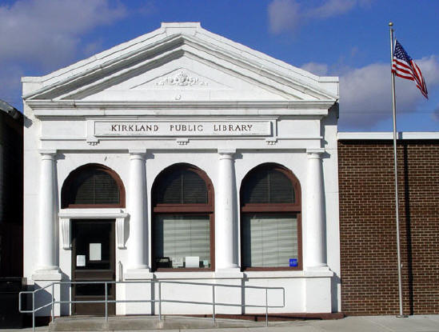

|
The History of
Kirkland

The present Kirkland Public Library is better
known as the 'old bank'.
Once the State Bank of Kirkland, built in 1913, it was credited for being
one of the only banks in the country that didn't close during the
Depression.
The first inhabitants of
this predominately wooded area were the Pottawatomie Indians. They
were among the most peaceful tribes. They grew rice and corn and
refined maple sugar. In September of 1835 the Pottawatomie along
with the other Indians west of the Mississippi were removed in
accordance with provisions of the treaty made at Prairie DuChein in
1832 at the close of the Black Hawk War. Some of their heritage
remains as part of David Shriver's arrowhead collection displayed in
the Kirkland Library.
Kirkland was named after
William Thomas Kirk who built a log cabin here in 1837 to raise his
nine children. By 1882 he had acquired 1,475 acres of land in the
area. Until the appointment of a postmaster, the town was called
Kirkwood. Since another post office had the same name, Kirkwood was
changed to Kirkland. The Village of Kirkland became official on
August 16, 1882. Kirkland has had the same form of municipal
government since it was first organized: a president, a clerk, and
six trustees.
In 1875 W.T. Kirk agreed
to give the railroad a portion of his land if every passenger train
would stop at Kirkland. The Kishwaukee River's course was changed
and the railroad was built.
The sheep business caused
the railroad and town to grow. By law, sheep coming from the east
could ride the rail 36 hours and Kirkland was that distance from
Omaha, Nebraska, where millions of sheep began their journey to
Chicago packing plants. The sheep would be watered, fed and sheared
here. Many remember the "sea of white" that had to pass into the
next pasture before they could continue to school.
In 1946, the Brennan
brothers leased the yard from the Milwaukee Railroad to run their
cattle business. In 1956, they bought the yards from the railroad
where the Brennan Cattle Company thrived. Eventually, the railroad
dwindled from eight tracks to one. In 1971, all passenger service
ceased, due to Amtrak.
From pony express to
railroad mail delivery, from eight railroad tracks to one, from
sheep yards to Brennan Cattle Company, from any one thing to
another, times chance, people change, but Kirkland's Heritage won't.
Excerpted from "A
Piece of Kirkland Heritage"
written by Connie Worden in 1982
|